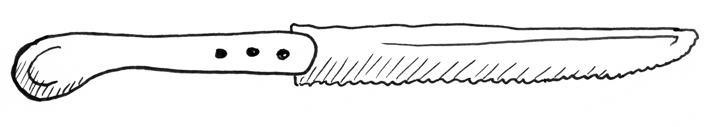
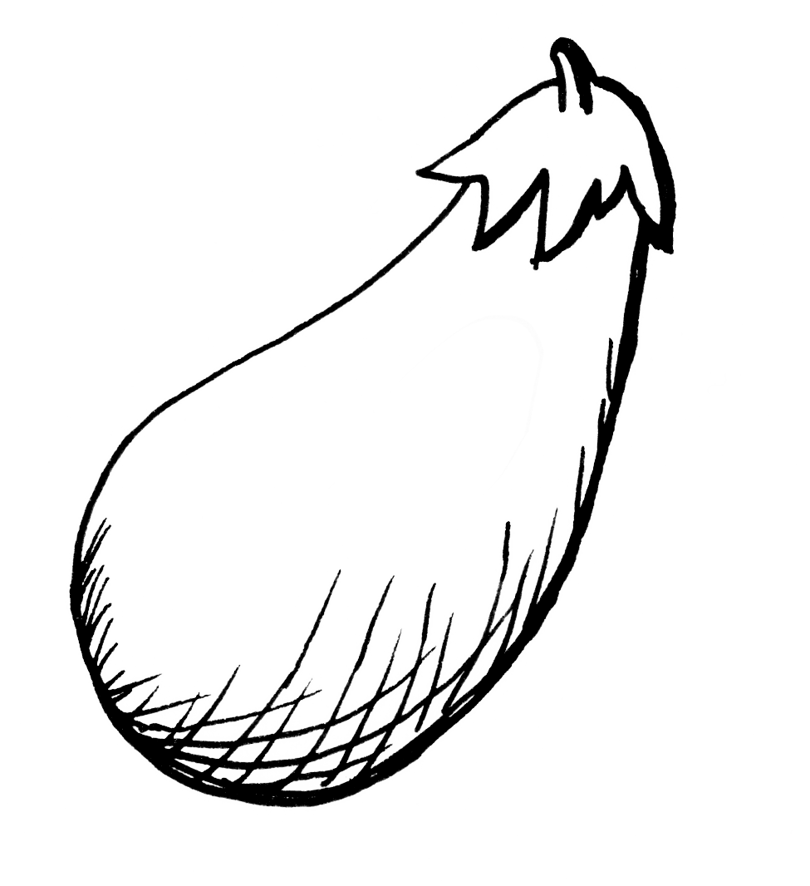
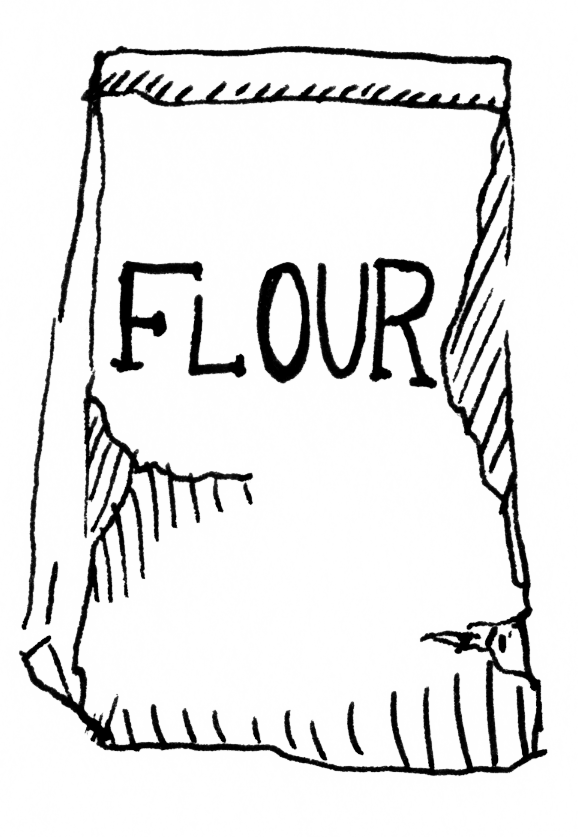
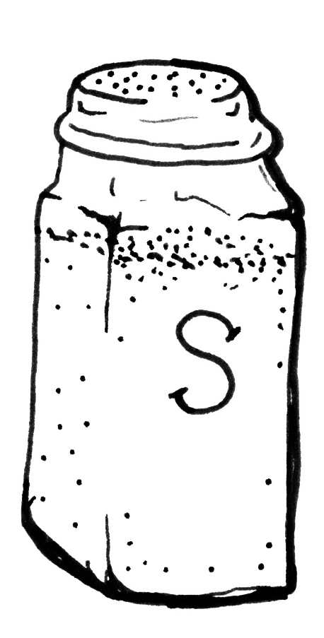
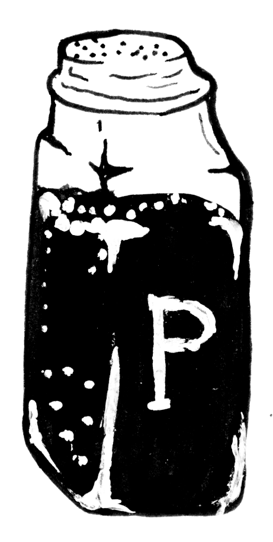
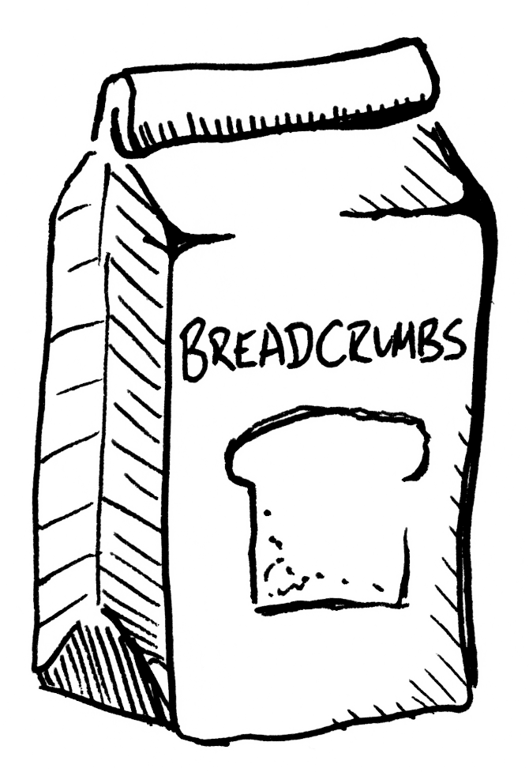
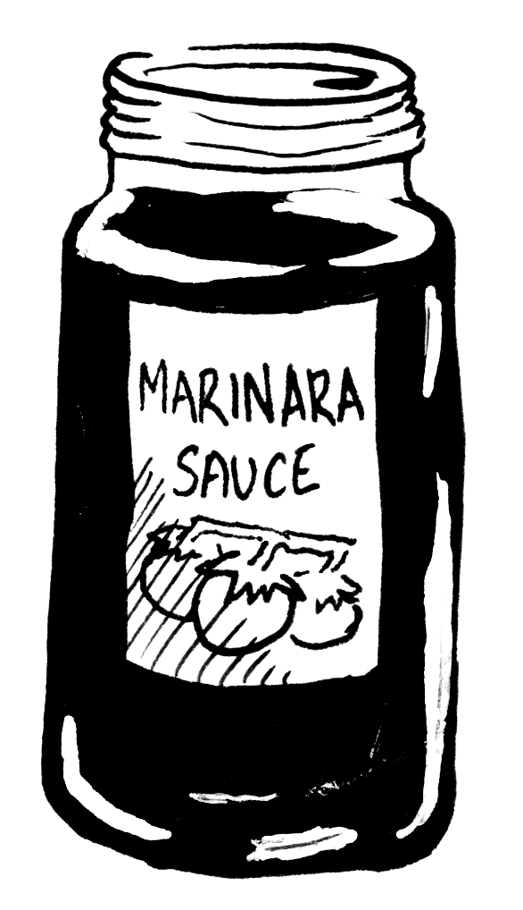
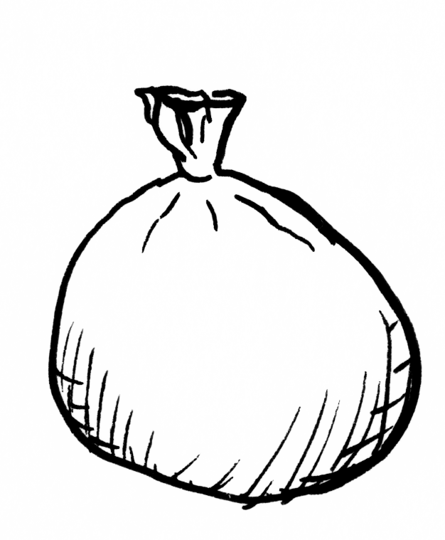
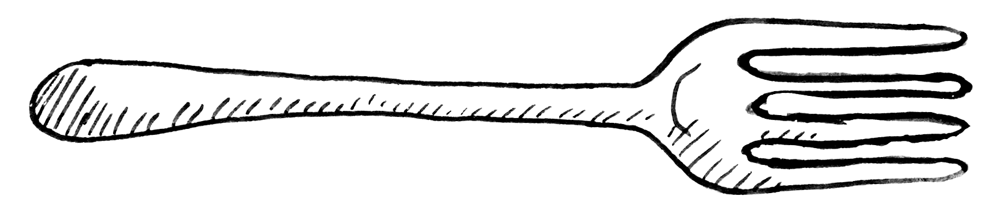

Prep Time: 30 minutes
Cook Time: 20 minutes

Serves: 6 people
Ingredients


Eggplant
1 large plant

Flour
½ cup

Salt
1 teaspoon

Black Pepper
½ teaspoon

Breadcrumbs
½ cup
Parmesean Cheese
½ cup, grated

Marinara Sauce
1, 24-oz jar
Olive Oil
¼ cup
Egg
1 large, beaten

Mozzerella Cheese
1 cup, shredded
Instructions

- Preheat the oven to 375 degrees F (190 degrees C).
- Cut the eggplant into 1” steaks. Sprinkle with salt and let sit for 10 minutes, then wipe off salt.
- In a bowl, mix the flour, salt, and pepper.
- In a different bowl, beat 1 egg.
- In a third bowl, mix your bread crumbs and Parmesean cheese.
- Dip eggplant slices in flour mixture, then egg, then bread crumb mixture.
- In a large skillet, heat olive oil over medium heat.
- Fry the eggplant slices until golden brown, about 2 minutes per side.
- Place eggplant slices in a greased 9x13 inch baking dish.
- Top with marinara sauce and mozzarella cheese.
- Bake for 20 minutes, or until the cheese is melted, bubbly, and brown.
- Serve immediately alone or on top of spaghetti. Sprinkle extra cheese as you wish.
-
This is called 'sweating' the eggplant -- it makes sure to get rid of moisture and makes sure the eggplant won't fall apart when you cook it!
-
To save time, do the other following prep while the eggplant is 'sweating'.
-
You can never have too much parmesean cheese!
-
Use hot chilli oil to fry in for an added kick.
-
Throw some whole grape tomatoes into the baking dish -- they'll cook into the sauce and be a delicious garment.